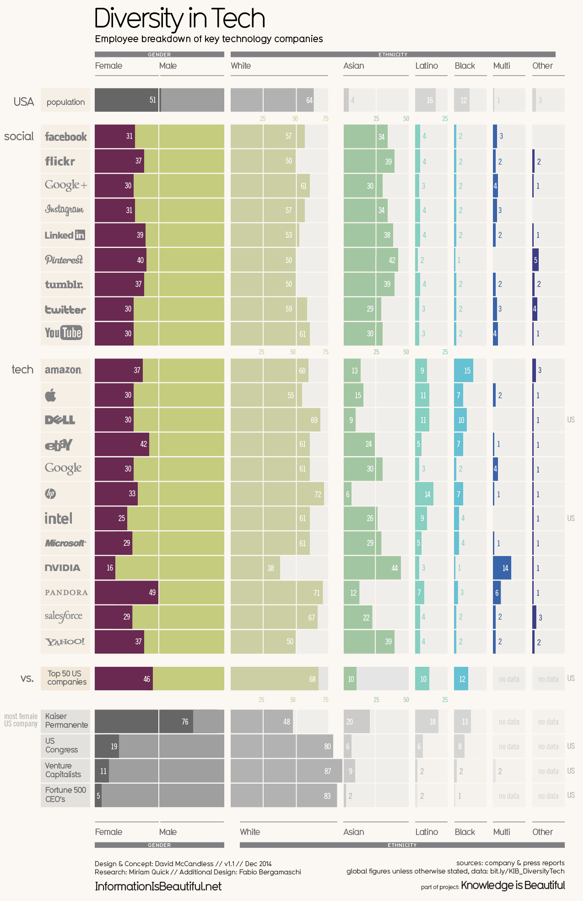

Disclaimer: these topics are so vast, but I tried to limit myself to an hour to research, write, and produce them. So they will be simplistic.
There's a lot of focus on diversity in tech in the media these days, and for good reason. The tech ecosystem is a very exciting space, a source of regional and national pride, and for some, a lucrative opportunity... and as this graphic clearly demonstrates, not everyone is getting in on the fun.
 While much of the rest of the post will apply to both gender diversity and racial/ethnic diversity, I'll focus on gender diversity. Because 1 hour. Maybe another post for another day.Much of what I see written is about the pipeline vs. culture debate, or whether there are fewer women in tech because fewer women pursue tech in school (pipeline) or because experiences with discrimination and misogyny in tech cause them to leave (culture).
Hidden in the pipeline/culture debate is actually a debate about whether the problem is more of a recruitment or a retention issue. So as we abstract this and try to figure out how to figure which is more important, let's consider the following metrics we could look at that would determine a particular demographic's representation in a given field or industry:
- Metrics describing recruitment into industry
- % of demographic in population overall. For gender, this is simple since all other things being equal, you'd expect about 50-50. But for race, it's trickier. If you read a headline that said, "African-Americans represent only 12% of the workers in tech!", that might seem low, but it's actually in line with the population overall. To be clear, the actual percentage of African-Americans in tech is much lower - there really is a diversity problem there - but some people forget that true diversity may not look like an equal number of all demographics sitting together a table.
- % of applicants for any position in industry X. This is the crux of the pipeline argument: fewer women pursue jobs in tech because the problem happens earlier - fewer women major in CS and STEM more generally, fewer women take STEM electives, etc.
- % of hires for any position in industry X. The other consideration on the intake side in addition to who is pursuing the industry is who actually gets the positions.
- Metrics describing retention in industry
- % of workers in demographic who leave the industry each year. The culture argument is really about retention: the bigger issue is not the pipeline, it's that women don't stay in tech once they get there. Metaphorically, a better pipeline doesn't help when you've got a leaky tank. Culture is only one force that might impact this, of course - we might see less female participation in industry X if they leave for more competitive industries or better job prospects elsewhere, to quit the labor force altogether, etc.
To be clear, culture could also explain pipeline issues: the reasons women don't pursue STEM even in college and high school is due to stereotypes and treatment they receive that makes them feel more welcome in other fields. But I most often see culture used as an argument that the problem is on the retention side.
Figuring out the relative importance of these factors feels very answerable with the data that's out there, but I don't see many folks trying to do that. Many articles are anecdotal, simply display the outcome metrics (e.g. the chart above), without trying to debate the importance of each factor. Others that do try to completely deny the presence of one factor rather than arrive at a more nuanced understanding of the issue in a data-driven way. I'm hoping that I can dig deeper into this in future posts.
Comments